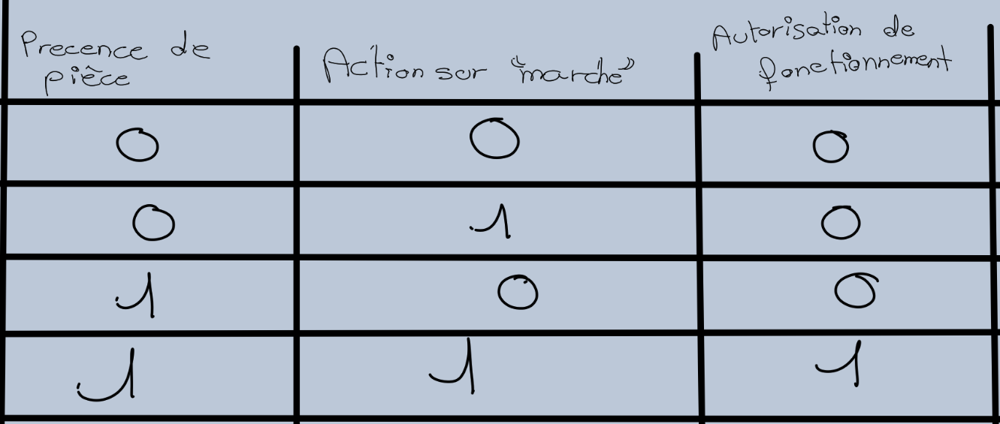

La variable booléenne (ou variable binaire) peut prendre seulement deux états logiques. Ces deux états logiques sont exprimés par deux chiffres:0 et 1(L et H en anglais)
1-2 L'opératoire booléen (ou pératoir binaire)
1-3 Exemple avec une perceuse automatisée
La désignation logique: pour que la perceuse soit autorisée à fonctionner, il faut la présence d'une pièce et appuyer sur le bouton "marche"
La table de vérité

L'expression booléenne = (Autorisation_de_fonctionnement)(Présence de pièce)(Action_sur_"marche")